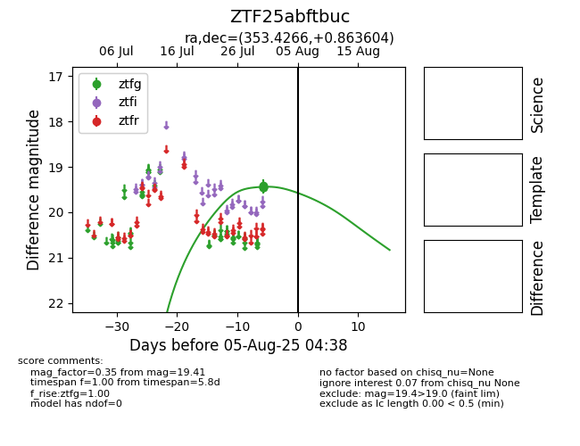

Target ZTF25abftbuc at 2025-08-05 04:38, see:
FINK: fink-portal.org/ZTF25abftbuc
Lasair: lasair-ztf.lsst.ac.uk/objects/ZTF25abftbuc
ALeRCE: alerce.online/object/ZTF25abftbuc
alt names
ZTF25abftbuc (ztf,fink)
coordinates:
equatorial (ra, dec) = (353.4266,+0.86360)
galactic (l, b) = (86.0508,-56.33769)
photometry
last ztfg=19.41
5 ztfg detections
